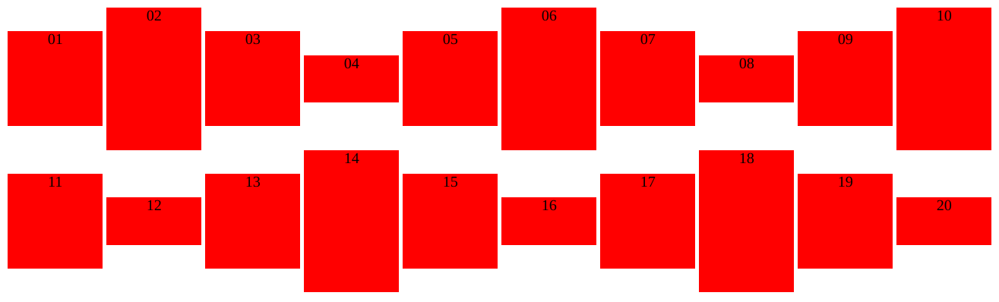

Opdracht 1-5
Opdracht 1:
-
-
block:Alle rode elementen staan onder elkaar. -
inline-block:Alle rode elementen staan naast elkaar. -
inline:Alle rode elementen staan naast elkaar.
-
-
Bij
inlinewordt de grootte van de elementen genegeerd. -
Bij
inlineeninline-blockworden de elementen als woorden weergegeven (naast elkaar).
Opdracht 2:
De ruimte tussen de elementen is veroorzaakt door deword-spacing.
Opdracht 3:
-
De tekst staat horizontaal gecentreerd in de blokken door volgende css:
div { text-align:center; } -
De chrome developer tools rapporteert dat dit een "
Invalid property value" is. Dit is dus hoogstwaarschijnlijk een ongeldige waarde voor devertical-align. -
vertical-align:middlezorgt ervoor dat alle rode elementen op dezelfde 'lijn/hoogte' verticaal gecentreerd worden t.o.v. elkaar. (zie foto)  -
-
Aangezien er volgens de opgave gehint wordt om
line-heightte gebruiken, kan je volgens http://phrogz.net/css/vertical-align/index.html#myoutercontainer deline-heightvan het ouder-element op een vaste waarde zetten. (zie gelinkte pagina, bij 'method 2') -
Idem, op dezelfde site
http://phrogz.net/css/vertical-align/index.html#tablecellexamples
wordt er getoond welke truc wordt vaak gebruikt om meerdere regels verticaal te centreren. (zie gelinkte pagina, bij '
vertical-alignin table cells')
-
Aangezien er volgens de opgave gehint wordt om
-
De regel van de class
tallkrijgt voorrang omdat deze later werd gedefinieerd in het styles.css bestand. Indien je deze regel verplaatst voor de definitie van de classareadan zullen de elementen 100px hoog zijn.